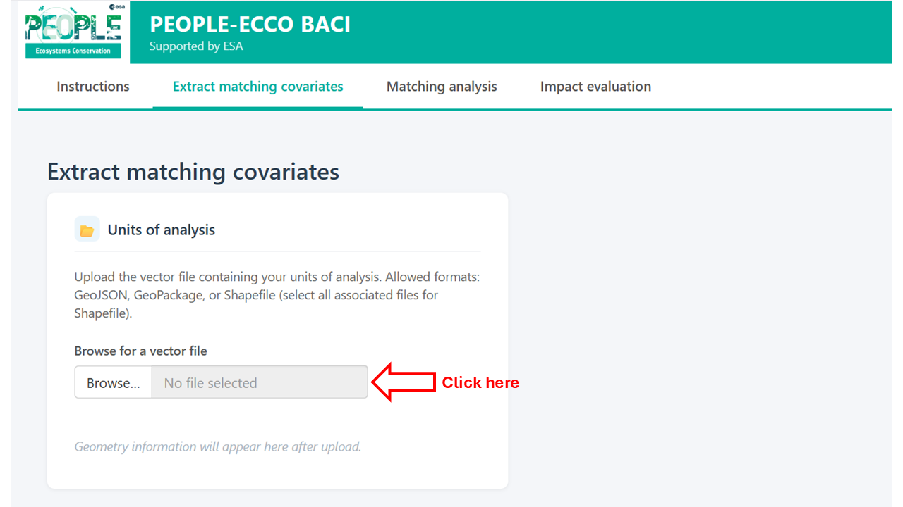
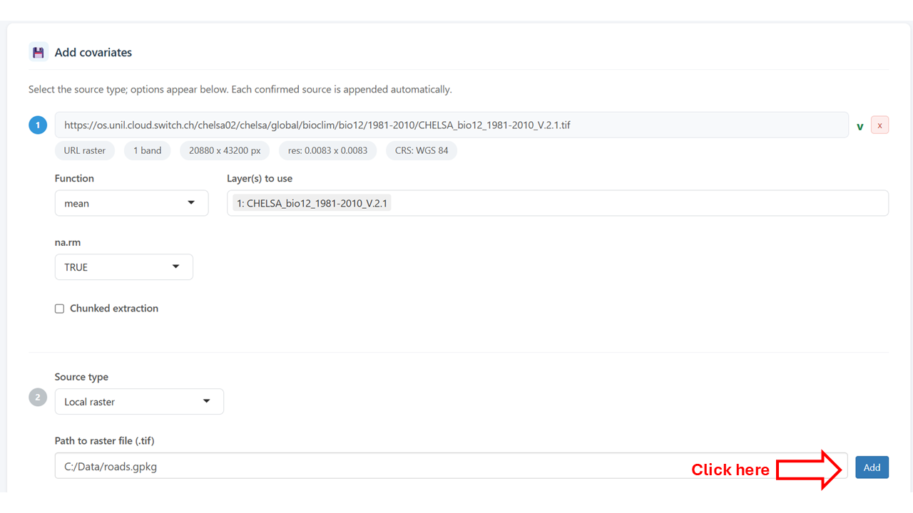
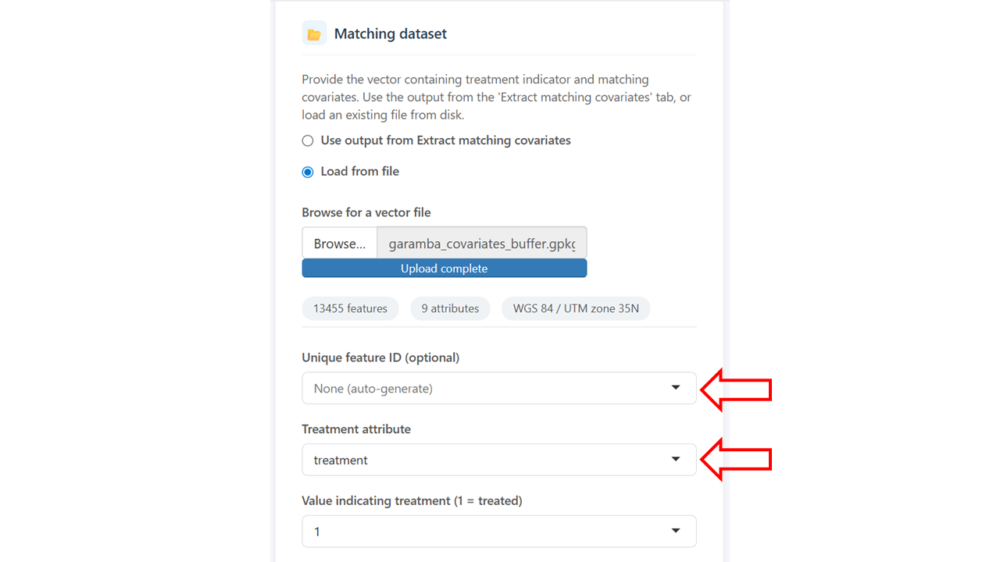
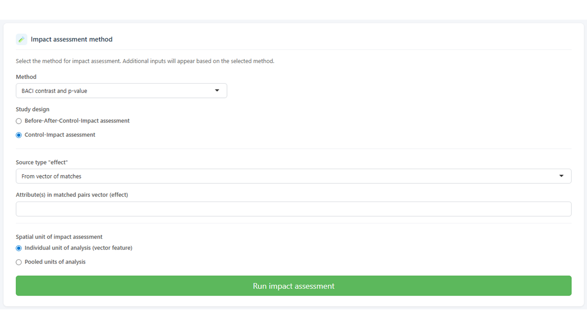

Getting Started with PEOPLE-ECCO BACI
Overview
PEOPLE-ECCO BACI is an interactive tool for spatial impact evaluation using the Before-After Control-Impact (BACI) design. It is intended for assessments of conservation or policy interventions where treated units (e.g. protected areas, project sites) can be compared to similar untreated control units over time.
The workflow is organised into three sequential tabs:
- Extract matching covariates — enrich your vector dataset with covariate layers from local or remote sources
- Matching analysis — match treated units to comparable controls based on the extracted covariates
- Impact evaluation — estimate the BACI contrast and its significance for each matched impact unit
Each tab produces an output file (GeoPackage) that can be saved and reused as input for subsequent steps, so the workflow can be paused, resumed, or started at the desired step, or combined with custom analysis in other software environments.
Before you start
You will need:
- A vector file of units of analysis (polygons or points) in any format
supported by GDAL:
.gpkg,.geojson,.shp. Each feature represents one unit (e.g. a restoration site, a grid cell, am in situ dite, an administrative unit). - A binary treatment attribute identifying which units received the intervention (1 = treated / impact, 0 = control).
- One or more covariate layers to use for matching - as attribute to the input vector file, or as local raster files, local vector files, or remote raster accessible via url.
- One or more impact variable layers -as attributes to the input vector or from an additional source- representing the outcome of interest, either as a single effect variable or as a before and after variable.
Tab 1 — Extract matching covariates
This tab prepares the matching dataset by extracting covariate values for each unit of analysis.
Input vector
Upload your vector file of units of analysis. The app accepts .gpkg,
.geojson, and .shp (with all associated sidecar files). Once loaded,
a summary of the geometry type, number of features, and available attributes
is shown.

Loading the vector file will display a plot on the right, where you can select the vector attribute to visualize.
You can choose which existing attributes to retain in the output alongside the newly extracted covariates.
Additional covariate sources
One or more covariate sources can be added using the Add button. For each source, select the source type:
- Local raster — a raster file on your computer (GeoTIFF or similar). Select which layers to use and the spatial summary function (mean, median, min, max, sum, sd). For polygon units, extraction uses coverage-weighted aggregation, or nearest neighbour or bilinear interpolation extraction from the polygon's centroid if "simple" or "bilinear" is selected For point units, values are sampled at the point location.
- URL raster — a raster accessible via a web URL (e.g. a COG file). Same extraction options as a local raster.
- Local vector — a vector file on your computer. Select the summary function: mean, median, sd, min, max, sum (for point covariates within polygons), count (points within polygons only), minDistance (minimum distance from each unit to the nearest feature), or merge (join attributes by geometry or by a shared ID field).
- openEO collection — a remote dataset accessible via the Copernicus Data Space Ecosystem (CDSE) openEO API. This section is experimental and is currently only implemented for the Copernicus DEM 30m collection. Terrain parameters (elevation, slope, aspect, northness, eastness) can be extracted directly. Authentication via OAuth2 is required.

After pressing the Add button, metadata of the data source will be presented, and the possibility to provide an additional data source is displayed.
Running extraction
Provide a filename for the output GeoPackage file and click Extract covariates to run. Progress is shown in a notification bar. Any errors per source are reported without stopping the extraction of other sources.
Tab 2 — Matching analysis
In this tab inputs are provided to match impact unit to one or more control units based
on specified covariates, using the MatchIt package.
Input dataset
Load the covariate-enriched vector from Tab 1 (automatically carried over if running sequentially) or upload an existing file. A map of the loaded units is shown, and attribute to visualize can be selected.
Select ID and treatment attribute
When the input dataset is loaded, select the attributes corresponding to the treatment and, optionally, the unique ID of the features.

Covariate selection
Select which attributes to use as matching covariates. A multicollinearity check (correlation matrix and Variance Inflation Factor table) is available to help identify redundant variables before matching.
Matching parameters
Configure the matching method and options - see the information of the MatchIt package for more details:
- Method — nearest neighbour, optimal, genetic, full, exact, CEM, cardinality, or subclassification.
- Estimand — ATT (average treatment effect on the treated), ATC, or ATE.
- Distance — propensity score method (logistic regression, probit, etc.) or distance metric (Mahalanobis, Euclidean).
- Replace — whether control units can be reused across matches.
- Ratio — number of controls matched to each impact unit (1:k).
- Caliper — optionally constrain matches by distance. An overall distance caliper and per-variable calipers can be set independently, each with a choice of standard deviation or raw units.
Evaluation
After running matching, the evaluation section shows:
- An interactive map of matched pairs, coloured by treatment status.
- Covariate balance statistics (standardised mean differences before and after matching).
- Cobalt diagnostics (love plot and density overlap plots per covariate).
Enter an output filename and click Save .gpkg to write the matched dataset as a GeoPackage for further analysis.
Tab 3 — Impact evaluation
This tab estimates the treatment effect for each matched impact unit using the BACI design.
Input dataset
Load the matched pairs vector from Tab 2 (automatically carried over if running sequentially) or upload an existing file. Select the treatment attribute, treatment value, unique ID, and match ID columns. These are pre-filled automatically if coming from Tab 2.
Select study design
Currently, BACI contrast and p-value is the only implemented impact assessment method. For this method, one of two study designs must be chosen: Before-After-Control-Impact or Control-Impact. In the former, the before and after attributes are first combined into a effect attributes. The latter starts directly from the effect attributes.

Impact variable sources
Add one or more sources for the impact variable (the outcome of interest), as effect or for both the before and after periods. Source types are the same as in Tab 1 (local raster, URL raster, local vector).
Alternatively, if the before and after values are already attributes in the matched vector (e.g. extracted in Tab 1), select From vector of matches.
Spatial unit of BACI computation
Impact assessment can be either run for the individual treatment units, or for the pool of treatment units combined.
The BACI contrast for individual units of analysis is computed as:
contrast = mean(effect of control units) - effect of impact unit
and for pooled units of analysis as:
contrast = mean(effect of control units) - mean(effect of impact units)
where effect = after - before for each unit. A paired t-test is used to assess significance for the pooled case or for the individual case when the matching ratio is 1:k (k > 1). For 1:1 matching at individual unit of analysis, no p-value is computed.
Click Run impact assessment to run. Errors per source are reported without aborting the analysis.
Results
Results are shown on an interactive map. Use the variable selector to switch between effect variables when multiple impact variables were extracted. The Grey out non-significant units checkbox dims units where p > 0.05, making spatial patterns of significant effects easier to identify.
Click any unit on the map to see a table of contrast values and p-values per variable for that unit.
Save the results as a GeoPackage using the save card below the map. The output contains all original matched attributes plus the before/after values, effect (difference), BACI contrast, and p-value for each impact variable.
For the pooled analysis, a single BACI contrast and p-value are provided per impact variable.
Tips and known limitations
- Large vector files and openEO: the CDSE synchronous API has a payload size limit. If extraction fails with a server error, check that your input vector is in WGS84 (EPSG:4326) before uploading — projected vectors are reprojected automatically, but malformed CRS metadata can cause issues.
- GeoPackage preferred over GeoJSON: the GeoJSON format mandates WGS84
coordinates, which can cause projected datasets to be mislabelled on
read-back. Use
.gpkgfor all local storage. - 1:1 matching and p-values: with a single control per impact unit, there is no variance to estimate and p-values are not computed. Use a ratio of at least 1:3 to obtain p-values.
- NaN p-values: if the impact variable has identical values for all control and impact units within a matched group (e.g. all zeros), the t-test is undefined and the p-value is reported as NA.